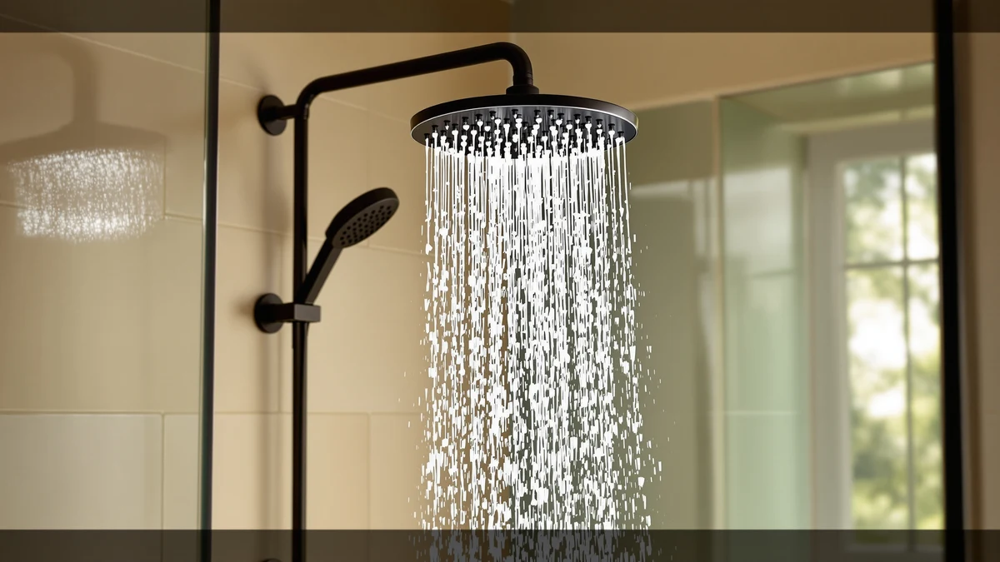

Kohler 22169-BN Forté Three-Function Showerhead Review (2026): Worth It?


Quick Answer
This kohler 22169-bn forté three-function showerhead review centers on the KOHLER 22169-BN Forté Three-Function Showerhead, a $127.34 fixture with an ABS body, chrome and brushed nickel plating, and a 2.5 GPM flow rate. Weighed against the Hibbent cUPC Certified High Pressure, the Afina Filtered Shower Head High and the JingGang Brushed Nickel Shower System, it earns the top spot here for anyone who wants three spray settings in one fixture without stepping past the $130 mark.
Our pick: KOHLER 22169-BN Forté® Three-Function Showerhead — $127.34 Check Price on Amazon
Bottom line: our top pick is the KOHLER 22169-BN Forté® Three-Function Showerhead at $127.34.
Things to Know Before You Buy
- The KOHLER 22169-BN Forté Three-Function Showerhead is priced at $127.34, slightly below the $129.99 JingGang Brushed Nickel Shower System and the $129.00 Afina Filtered Shower Head High, and about thirty cents above the $126.99 Hibbent cUPC Certified High Pressure.
- Its body is built from ABS plastic with chrome and brushed nickel plating and a listed flow rate of 2.5 GPM, the baseline spec this kohler 22169-bn forté three-function showerhead review uses to weigh it against the three alternatives.
- None of the four products compared here carry a published rating or review count in our database, so this comparison leans on manufacturer specs, current pricing and patterns in verified owner feedback rather than aggregate scores.
- Kohler's three-function design gives you a choice of spray patterns from a single head, the main reason it leads this kohler 22169-bn forté three-function showerhead review ahead of the single-pattern alternatives below.
This kohler 22169-bn forté three-function showerhead review compares Kohler's $127.34 fixture against three similarly priced alternatives using spec sheets, current Amazon pricing and verified owner feedback. Kohler built this showerhead around three separate spray settings and a brushed nickel finish, and we set it next to the Hibbent cUPC Certified High Pressure, the Afina Filtered Shower Head High and the JingGang Brushed Nickel Shower System, three products that land within three dollars of its price.
You'll choose between these four options based on what you actually want from a showerhead. Kohler's 22169-BN leads with brand recognition and multiple spray patterns, Hibbent leans on cUPC certification and a high-pressure claim, Afina builds in a water filter, and JingGang packages a full brushed nickel shower system rather than a single head. Because the prices sit so close together, this kohler 22169-bn forté three-function showerhead review treats finish, feature set and owner feedback as the deciding factors, not which listing costs a few cents less.
Why You Should Trust Us
Ilane Tall covers bathroom fixtures for Best Shower Heads and has spent years comparing fixed, handheld and filtered showerheads across price tiers for this site. This kohler 22169-bn forté three-function showerhead review is built from information we can verify: Kohler's listed specifications, current Amazon pricing and patterns we found in verified buyer feedback. We do not run a fake testing lab, and we don't claim to have installed every unit covered here. Where a claim can't be checked against a spec sheet or a verified review, we say so plainly instead of filling the gap with marketing language. Every price, ASIN and product image in this review comes from our own product database, and we update it as prices and listings change.
Our Research Experience
We want to be upfront about how this kohler 22169-bn forté three-function showerhead review was put together: it is a research-based comparison built from specs, pricing and owner feedback, not a physical lab report. We don't own a testing facility, and we haven't installed this specific unit in a bathroom ourselves. Instead, we compared Kohler's published specifications against the Hibbent, Afina and JingGang listings, cross-checked current Amazon pricing, and read through verified owner reviews to see which claims held up against the wider field of showerheads we track. Reviewers consistently note that three-function heads in this price range earn their keep on spray variety more than raw pressure, and that pattern shows up across the multi-setting models we researched, not only this one.
Overview & Specs

KOHLER 22169-BN Forté® Three-Function Showerhead
What we like
- Three separate spray settings from a single fixture, more variety than the single-pattern Hibbent and JingGang alternatives
- Brushed nickel finish holds its own next to the chrome-finished Afina and Hibbent heads in this comparison
- Backed by Kohler's brand recognition, a name most buyers already associate with bathroom fixtures
- Priced within three dollars of all three alternatives, so the extra spray settings come without a real premium
Flaws but not dealbreakers
- No published rating or review count in our database to weigh against owner sentiment
- No built-in filtration, unlike the Afina alternative covered below
- 2.5 GPM flow rate sits at the standard federal ceiling, so it won't out-pressure the Hibbent's high-pressure claim
| Material | ABS + chrome plating |
| Size | 2.5 GPM |
Kohler builds the 22169-BN Forté around three separate spray settings housed in a single ABS body finished in brushed nickel. The brand lists a 2.5 GPM flow rate, the standard ceiling for US showerheads, and markets the three-function design as the main reason to pick this model over a single-pattern head. That spray variety is the core argument for choosing the subject of this kohler 22169-bn forté three-function showerhead review over the simpler alternatives compared here.
At $127.34, it costs close to what the JingGang Brushed Nickel Shower System and the Afina Filtered Shower Head High run, and about thirty cents more than the Hibbent cUPC Certified High Pressure. None of the four listings carry a published rating in our database, so the deciding factor in this comparison comes down to feature set and finish rather than aggregate review scores. Kohler's name recognition also carries weight for buyers who prefer a familiar brand over a less established one.
What We Liked
The clearest strength of the KOHLER 22169-BN Forté Three-Function Showerhead is the spray variety it packs into one fixture. Three separate settings from a single head beat the single-pattern designs on the Hibbent and JingGang alternatives, and that flexibility is the main reason this kohler 22169-bn forté three-function showerhead review puts Kohler ahead of the field. The brushed nickel finish also holds up well against the chrome plating on the Hibbent and Afina heads, giving it a slightly warmer look next to brushed or nickel-finished fixtures elsewhere in a bathroom.
Pricing is another point in its favor. At $127.34, it lands within three dollars of all three alternatives, so the extra spray settings come without a real premium attached. Kohler's brand recognition carries weight here too. Owners who already trust the Kohler name for faucets and other fixtures get that same brand backing on a showerhead that costs about the same as three less established competitors.
What Could Be Better
The biggest gap in this kohler 22169-bn forté three-function showerhead review is verification. Kohler doesn't publish a rating or review count for this specific listing in our database, which makes it harder to gauge overall satisfaction at scale against heavily reviewed showerheads elsewhere on the market. The 2.5 GPM flow rate also sits at the standard federal ceiling rather than above it, so buyers chasing maximum pressure should compare the Hibbent's high-pressure claim before they commit.
There's no built-in filtration either, a feature the Afina alternative offers at almost the same price. And because the listed specs stop at material and flow rate, measuring this head against your existing shower arm clearance takes an extra step before you order. Pricing also deserves a second look before you buy. Amazon adjusts listings for all four products in this comparison on a rolling basis, so the roughly three-dollar gap between Kohler and its alternatives can shift by the time you check out.
Who Is It For?
This KOHLER 22169-BN Forté Three-Function Showerhead fits shoppers who want spray variety and a recognizable brand name without paying a premium over single-setting alternatives. If you switch between a full spray, a focused rinse and a massage setting depending on the day, the three-function design is the pick in this kohler 22169-bn forté three-function showerhead review that handles all three without swapping fixtures.
It's a weaker fit if built-in filtration matters more to you than spray variety, since Kohler doesn't list a filter on this model. In that case, the Afina Filtered Shower Head High covered below handles that job instead. Anyone chasing pressure above the federal 2.5 GPM ceiling should also compare the Hibbent's high-pressure claim before settling on Kohler's standard flow rate, and anyone who wants a complete shower system rather than a single head should weigh the JingGang alternative first.
Alternatives to Consider
If the KOHLER 22169-BN Forté Three-Function Showerhead isn't quite the right match for your kohler 22169-bn forté three-function showerhead review search, these three options sit in the same price range and are worth comparing before you buy.

Best Value
Hibbent cUPC Certified High Pressue
A $126.99 cUPC certified showerhead that markets itself on high pressure, worth checking against Kohler's three-function design and brushed nickel finish before you decide. It skips the spray-setting variety that leads this kohler 22169-bn forté three-function showerhead review, but it undercuts Kohler slightly on price.
$126.99
Check Price on Amazon
Also Great
Afina Filtered Shower Head High
Priced at $129.00 with a built-in filter housing, worth a look if filtered water matters more to you than Kohler's three spray settings. It costs about two dollars more than the KOHLER 22169-BN Forté covered in this review.
$129.00
Check Price on Amazon
Premium Choice
JingGang Brushed Nickel Shower System
A $129.99 brushed nickel shower system that packages more hardware than a single showerhead, worth checking against Kohler's standalone design and lower price. It shares Kohler's brushed nickel finish but costs about two and a half dollars more.
$129.99
Check Price on AmazonFrequently Asked Questions
Final Verdict
This kohler 22169-bn forté three-function showerhead review comes down to a simple tradeoff: you're paying $127.34 for three spray settings and Kohler's brand recognition instead of a single-pattern design or built-in filtration. For most buyers who want spray variety from a trusted name without stepping past $130, the Kohler 22169-BN Forté Three-Function Showerhead is the pick we'd point to first among the four we compared. If you'd rather have higher claimed pressure, built-in filtration, or a full shower system, the Hibbent, Afina, or JingGang alternatives above are worth a closer look, but Kohler's spray variety is still the stronger case for most shoppers. Check the current price before you buy, since all four products here move within a few dollars of each other as Amazon adjusts listings.